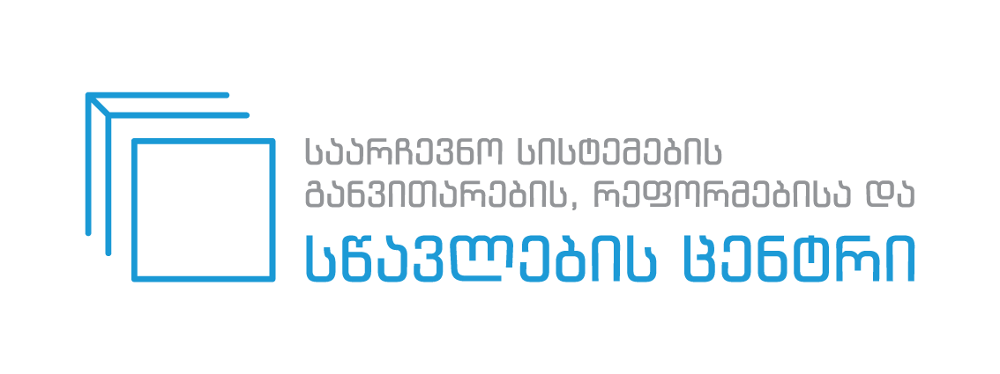
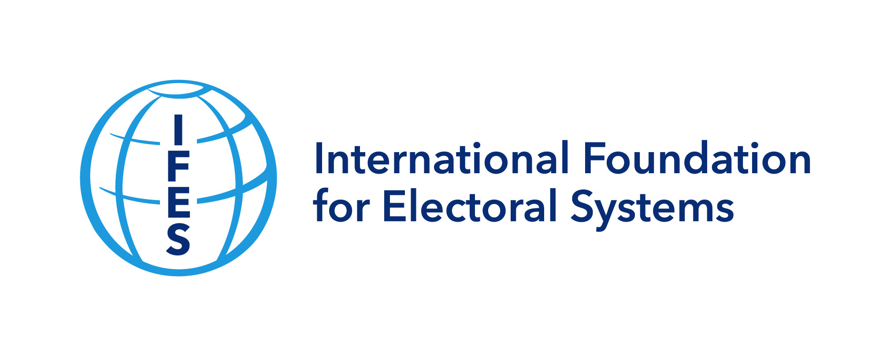
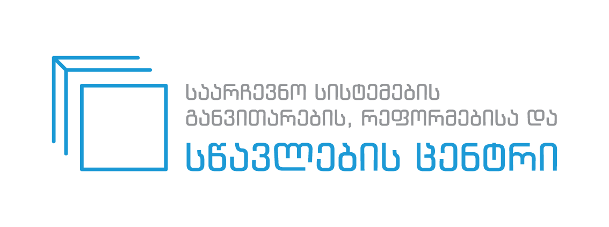
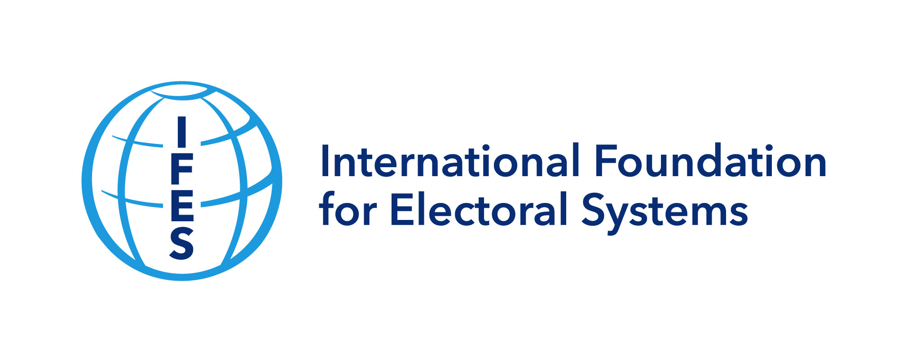

ᲞᲠᲝᲔᲥᲢᲘᲡ ᲨᲔᲡᲐᲮᲔᲑ
ელექტრონული სასწავლო პროგრამა „კენჭისყრის შედეგების შემაჯამებელი ოქმის შედგენის ტექნიკა“ შემუშავებულია 2021 წელს გასამართი მუნიციპალიტეტის ორგანოთა არჩევნებისთვის, სსიპ საარჩევნო სისტემების განვითარების, რეფორმებისა და სწავლების ცენტრისა (სწავლების ცენტრი) და საარჩევნო სისტემების საერთაშორისო ფონდის (IFES) თანამშრომლობით, USAID-ის მეშვეობით.
სასწავლო პროგრამის მიზანია კენჭისყრის შედეგების შემაჯამებელი ოქმის შედგენაზე უფლებამოსილი საუბნო საარჩევნო კომისიის ხელმძღვანელი პირების (თავმჯდომარე, მდივანი) პროფესიული ცოდნისა და პრაქტიკული უნარების განმტკიცება კენჭისყრის შედეგების შემაჯამებელი ოქმის შედგენის ტექნიკაზე.
ᲕᲘᲓᲔᲝ ᲘᲜᲡᲢᲠᲣᲥᲪᲘᲐ

 


